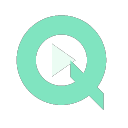

TUBEQUIET · PRIVACY & SOURCE
Your viewing stays yours.
Last updated: September 17, 2026
What happens on your device
TubeQuiet reads and modifies YouTube page content and player responses locally to reduce advertisements. It stores only an enabled/paused preference in Chrome's local extension storage. It does not store video titles, URLs, watch history, account details, or identifiers.
No collection or transmission
TubeQuiet has no analytics, telemetry, advertising SDK, remote configuration server, or developer-operated backend. It does not collect or transmit your personal data. YouTube and Chrome continue to operate under their own privacy policies.
Permissions
- YouTube site access: apply filtering on youtube.com, www.youtube.com and m.youtube.com.
- Scripting: register the bundled player filter at page startup.
- Declarative network requests: block the bundled ad request patterns when initiated by supported YouTube pages.
- Storage: remember your protection setting on this device.
Your control
Pause filtering from the toolbar panel and reload all open YouTube pages. Uninstalling the extension deletes its locally stored preference. There is no server-side data to request or delete.
Source and license
This extension is GPL-3.0-or-later. Its readable JavaScript is the preferred source form and is included in the package; no compiler or remote component is needed. You may inspect, modify and redistribute it under the license. The project repository may remain private during development.
Read the full license · Rule provenance and acknowledgements
Support
Use the support contact shown on the Chrome Web Store listing when this extension is published. This development build has not yet been submitted to the store.
TubeQuiet is an independent project. It is not affiliated with or endorsed by YouTube, Google, or uBlock Origin. Filtering is best effort; creator sponsorships and some server-delivered ads may remain.